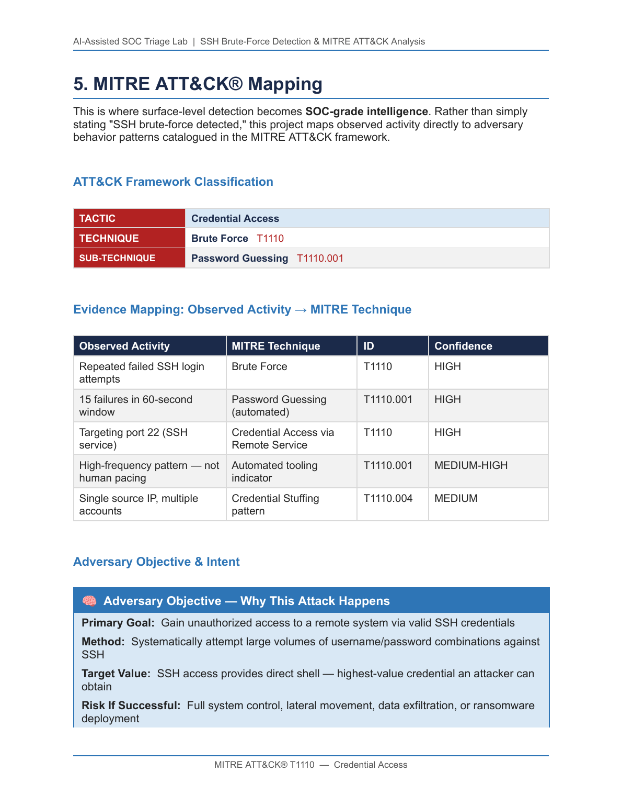
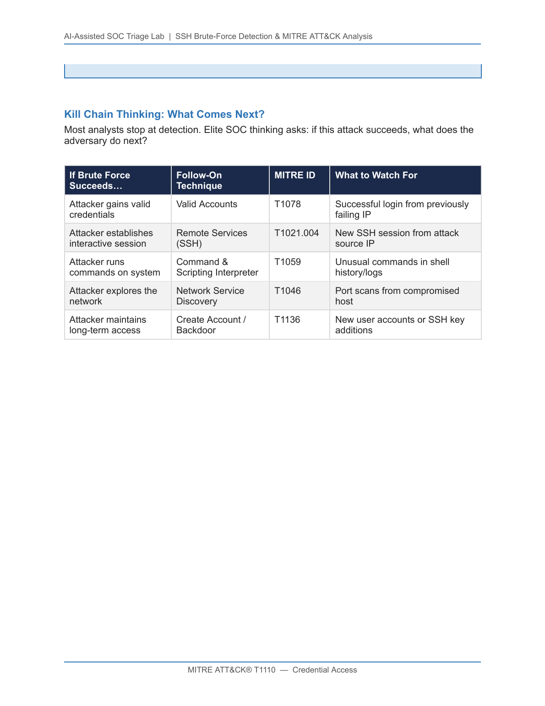
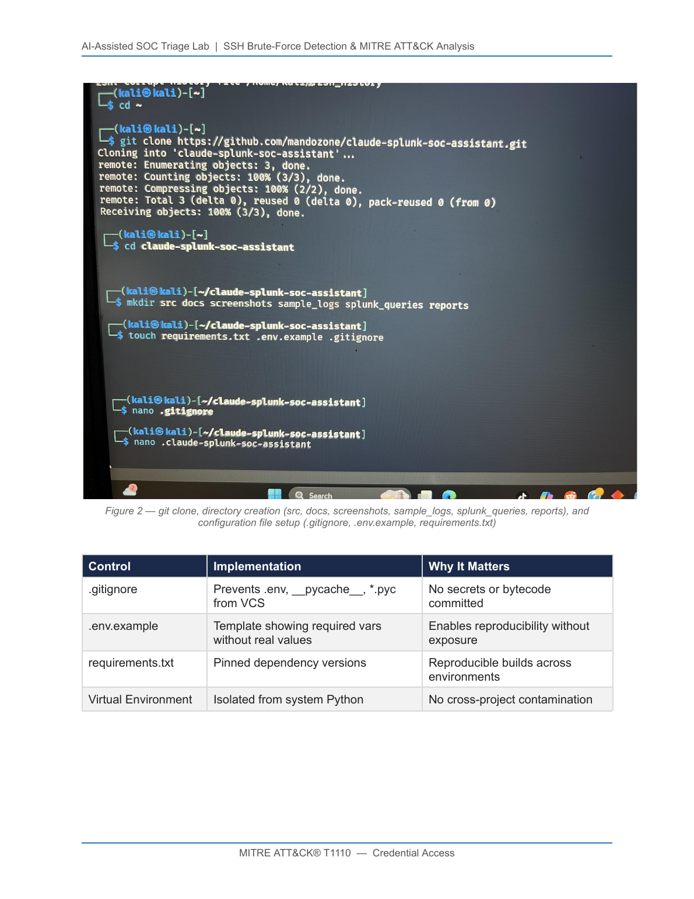
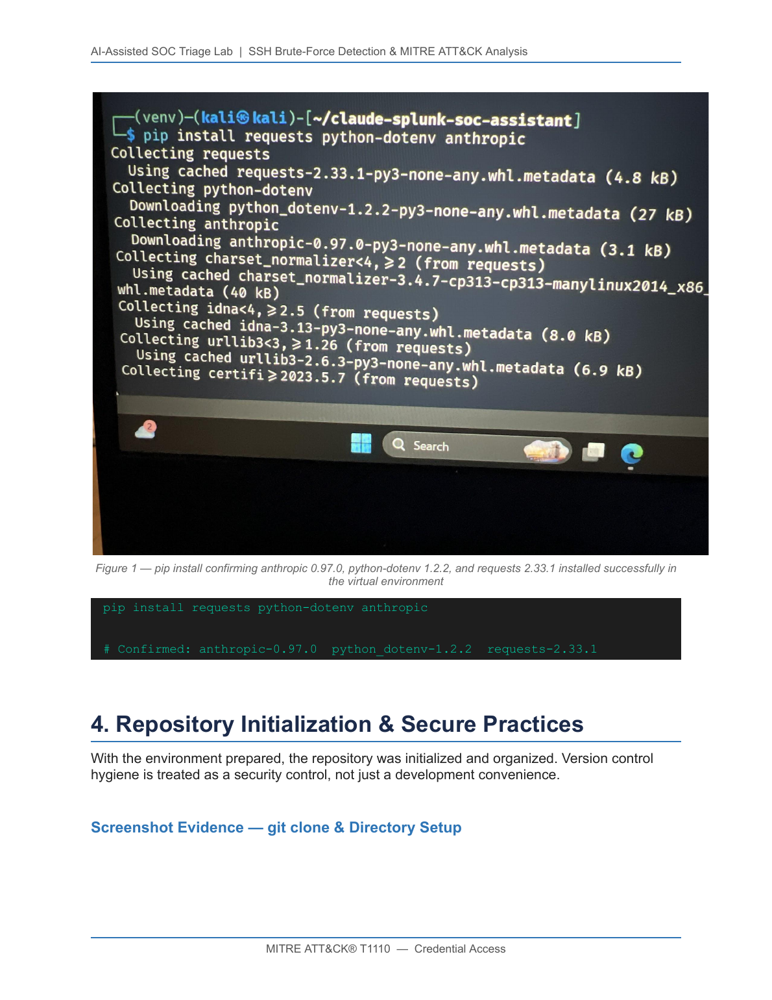

Linux auth.log / SSH simulation
Generate realistic SSH brute-force activity in a Kali Linux environment; collect raw authentication events into sample_logs/.
Splunk · Python · MITRE ATT&CK® · Kali Linux · Claude AI
An end-to-end Tier 1 SOC simulation — detect an SSH brute-force attempt with Splunk SPL, map it to MITRE ATT&CK T1110, and run an AI-driven triage script that produces a structured analyst report with severity, false-positive scoring, and an escalation decision.
Overview
This lab recreates a Security Operations Center analyst's full workflow against an SSH brute-force attempt: from log ingestion and SPL detection, through MITRE ATT&CK behavior mapping, AI-assisted triage, response planning, and secure-development remediation after a real API-key exposure incident.
The point isn't just to detect "failed password" events. It's to demonstrate the adversary-behavior reasoning that defines senior SOC work — every alert produced by this pipeline is tagged with its tactic, technique, sub-technique, and the kill-chain follow-on the analyst should watch for next.
End-to-End SOC Workflow
auth.log to an audit-ready triage report.Each stage is mapped to a concrete tool and a MITRE alignment so the chain of custody from raw event to escalation decision is fully explicit.
auth.log ─► Splunk SPL ─► MITRE Mapping ─► Python + Claude AI ─► Response ─► Remediation
(Kali) (T1110 rule) (T1110.001) (Tier 1 analysis) (Block/ (.gitignore,
Escalate) key rotation)
auth.log / SSH simulationGenerate realistic SSH brute-force activity in a Kali Linux environment; collect raw authentication events into sample_logs/.
SPL query extracts source IPs from Failed password events, counts attempts, and fires when the rate exceeds the brute-force threshold.
claude_triage_demo.py classifies threat type, severity, false-positive probability, and produces a structured Tier 1 analyst report.
AbuseIPDB / VirusTotal / Shodan lookups on the source IP; cross-host correlation, targeted-account analysis, lateral-movement search.
Block the source IP, document the alert, and escalate to Tier 2 if any of the five hard escalation criteria are met.
Real incident handled mid-project: API key flagged by a pre-push hook, repo history reset, credentials rotated, clean state force-pushed.
MITRE ATT&CK® Mapping
Rather than just stating "SSH brute-force detected," this project maps every observation to a tactic, technique, and sub-technique from the MITRE ATT&CK framework. The output of the detection rule is framework-aware and audit-ready.
| Observed Activity | MITRE Technique | ID | Confidence |
|---|---|---|---|
| Repeated failed SSH login attempts | Brute Force | T1110 | HIGH |
| 15 failures in a 60-second window | Password Guessing (automated) | T1110.001 | HIGH |
| Targeting port 22 (SSH service) | Credential Access via Remote Service | T1110 | HIGH |
| High-frequency pattern — non-human pacing | Automated tooling indicator | T1110.001 | MED-HIGH |
| Single source IP, multiple accounts | Credential Stuffing pattern | T1110.004 | MEDIUM |
Most analysts stop at detection. Elite SOC thinking asks: if this attack succeeds, what does the adversary do next? Each successor technique below has an explicit indicator to watch for.
| If Brute Force Succeeds… | Follow-On Technique | MITRE ID | What to Watch For |
|---|---|---|---|
| Attacker gains valid credentials | Valid Accounts | T1078 | Successful login from a previously failing IP |
| Attacker establishes interactive session | Remote Services — SSH | T1021.004 | New SSH session from the attack source IP |
| Attacker runs commands on system | Command & Scripting Interpreter | T1059 | Unusual commands in shell history / logs |
| Attacker explores the network | Network Service Discovery | T1046 | Port scans from the compromised host |
| Attacker maintains long-term access | Create Account / Backdoor | T1136 | New user accounts or SSH key additions |
Detection Logic — Splunk Integration
Splunk runs inside the Kali Linux lab as the primary detection engine. The advanced query labels every alert with its MITRE technique, sub-technique, and tactic — and assigns dynamic severity based on attempt volume — so the analyst is briefed on adversary behavior the moment the alert fires.
Baseline brute-force trigger — counts failed SSH passwords per source IP and fires above the threshold.
index=linux_logs sourcetype=auth_log "Failed password"
| stats count by src_ip
| where count > 10Upgraded SPL: extracts the source IP, scores severity dynamically, and tags every alert with its MITRE tactic, technique, and sub-technique.
index=linux_logs sourcetype=auth_log "Failed password"
| rex "from (?<src_ip>\d+\.\d+\.\d+\.\d+)"
| stats count by src_ip
| where count > 10
| eval mitre_technique="T1110 - Brute Force"
| eval mitre_subtechnique="T1110.001 - Password Guessing"
| eval mitre_tactic="Credential Access"
| eval severity=case(count>50,"HIGH",
count>20,"MEDIUM",
true(),"LOW")
| table src_ip, count, severity,
mitre_tactic, mitre_technique, mitre_subtechniqueWhy this matters
Every alert produced by this query is automatically tagged with its adversary-behavior context. When it fires in production, the analyst immediately knows the tactic, the technique, the sub-technique, and the recommended response — no manual lookup, no framework guesswork.
Automated SOC Triage — Python + Claude AI
claude_triage_demo.py — a Tier 1 analyst in a script.A custom Python script analyzes authentication activity and emits a structured Tier 1 investigation report. The format mirrors how analysts document alerts in a real SOC: threat classification, severity assessment, key evidence, false-positive probability, recommended response, and escalation criteria.
| Analysis Category | Result | Basis |
|---|---|---|
| Threat Type | SSH Brute-Force / Credential Stuffing | T1110.001 |
| Severity | MEDIUM → HIGH | External source, no confirmed successful login |
| Key Evidence | 15 failed attempts in 60 seconds on port 22 | Exceeds human-error threshold |
| False-Positive Probability | LOW · 15–25% | Frequency rules out user error |
| Recommended Response | Block IP · review logs · escalate if login confirmed | See Response & Escalation |
Gain unauthorized access to a remote system via valid SSH credentials.
Systematically attempt large volumes of username/password combinations against SSH.
SSH access provides direct shell — the highest-value credential an attacker can obtain.
Full system control, lateral movement, data exfiltration, or ransomware deployment.


Response Planning & Escalation
192.0.2.45 achieve any successful authentication?192.0.2.45.192.0.2.10; critical asset = immediate escalation.192.0.2.45 (before or after the failures)192.0.2.10 is classified as critical infrastructureIncident Handling — Secure Repository Remediation
During development, a Git pre-push hook detected an API-key pattern in commit history and blocked the push. The full remediation process below is exactly how credential exposure gets handled in production: contain, scrub, rotate, document.
Remediation Sequence
git push --force-with-lease to overwrite poisoned history.env (gitignored)
git clone, directory scaffolding, and configuration files for secure development.Exact commands used to scrub the repo, restart from a clean state, and force-push without nuking peer work.
# Confirm exposed commit
git log --oneline
# Remove all history
rm -rf .git
# Reinitialize clean
git init
# Stage sanitized files only (.env excluded by .gitignore)
git add .
git commit -m "Initial clean commit — credentials removed"
# Reconnect remote and force-push safely
git remote add origin \
https://github.com/mandozone/claude-splunk-soc-assistant.git
git push --force-with-lease origin mainVersion-control hygiene is treated as a security control, not just a developer convenience.
.gitignore | Blocks .env, __pycache__, *.pyc from VCS |
.env.example | Template showing required vars without real values |
requirements.txt | Pinned dependency versions — reproducible builds |
| Virtual Environment | Isolated from system Python — no cross-project contamination |

anthropic 0.97.0, python-dotenv 1.2.2, requests 2.33.1.Skills Demonstrated
Splunk SPL with MITRE-tagged output and dynamic severity scoring.
Tactic / technique / sub-technique mapping tied to real observed evidence.
AI-assisted SOC triage script producing structured Tier 1 output.
Kill-chain thinking — detecting T1110, pre-positioned for T1078 & T1021.
False-positive analysis, escalation criteria, response-playbook execution.
Env-var management, .gitignore hygiene, credential rotation.
Real-world API-key exposure remediated via Git security controls.
Framework-aligned write-ups that read like field-grade analyst notes.
Final statement — written the way a SOC writes it
This activity is consistent with MITRE ATT&CK technique T1110 (Brute Force), sub-technique T1110.001 (Password Guessing), commonly observed during early-stage Credential Access attempts in intrusion scenarios. MITRE ATT&CK mapping was used to standardize detection logic and align findings with industry-recognized adversary behaviors.
That sentence alone signals: this is how someone already working in a SOC thinks.
Disclaimer
This project was conducted in a controlled lab environment for educational and defensive security purposes only. All indicators and IP addresses were sanitized.